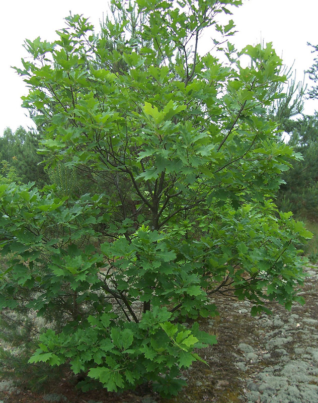

Дуб красный

Описание товара:
Дуб красный. Quercus rubra
Характеристики товара:
- Происхождение: Северная Америка
- Диаметр горшка: 10 см.
- Освещение: Среднесветолюбив, легко переносит боковое затенение, но предпочитает полное освещение верхушки кроны.
- Уход: Рекомендовано опрыскивание в летний период времени. Полив обильный с обязательным высушиванием земляного кома.
- Примечания: Морозоустойчив. Ветроустойчив.